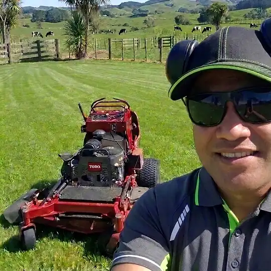
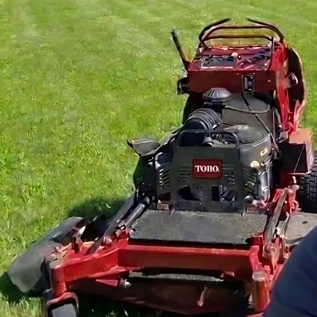

A ride-on mower for bigger lawns
Some sections are just too big to do well with a push mower alone. For large lawns and wide open grass, Hamilton Lawn Mowing uses a small ride-on mower. It covers more ground in less time and gives a more even finish across a big area.
To be clear up front: this is a normal ride-on mower, not a tractor. It is built for lawns, not paddocks. If your property needs tractor work, we will tell you at the quote rather than turn up with the wrong gear.
What suits a ride-on
- Large residential sections with a big back or front lawn.
- Open grass areas on commercial sites, body corporates and shared spaces.
- Long, wide lawns where a push mower would take most of the visit.
- Lawn areas on the edge of town where the grass is kept like a lawn rather than a paddock.
Whether your section suits the ride-on depends on its size, the slope, the access and the ground. We do not set a size limit online. We look at each section when we quote and tell you what will work best.
Ride-on mowing or tractor mowing?
People often search for tractor mowing when what they really need is a ride-on. Here is the difference:
- Ride-on mowing (what we do) is for lawns and open grass that is mowed regularly. It leaves a tidy, lawn-like finish.
- Tractor mowing or slashing is for paddocks, rough blocks and very long, thick grass. We do not offer tractor work.
If you are not sure which one your property needs, send us a photo when you ask for a quote and we will tell you honestly.
Our ride-on at work
Our ride-on covers open lawn quickly and leaves an even, striped finish:


Around the edges, fences, trees and garden beds we finish with line trimming and a push mower where the ride-on cannot reach, so the whole section looks done, not just the open middle.
Ride-on mowing can also be added to commercial mowing visits, or booked as a one-off mow when a big lawn has got away on you.
Ride-On Mowing FAQs
Do you do tractor mowing?
No. We use a small ride-on mower, not a tractor. It suits large lawns and open grass areas. Paddocks and rough blocks usually need a tractor, and we will tell you at the quote if that is the case.
How big a section can you mow with the ride-on?
There is no fixed limit. We assess each section when we quote, looking at size, slope, access and ground conditions, and tell you the best way to mow it.
How much does ride-on mowing cost?
Ride-on mowing is quoted per job. The price depends on the size of the section, how long the grass is and how much edging there is. The quote is free.
Do you still trim the edges?
Yes. We line trim along fences, paths and gardens, and use a push mower for tight areas the ride-on cannot reach.
Can you mow my large section regularly?
Yes. Large sections can go on a regular schedule like any other lawn, or you can book a one-off mow.
Got a big section?
Send us your address and a photo if you can. We will tell you whether the ride-on suits your section and give you a free quote.